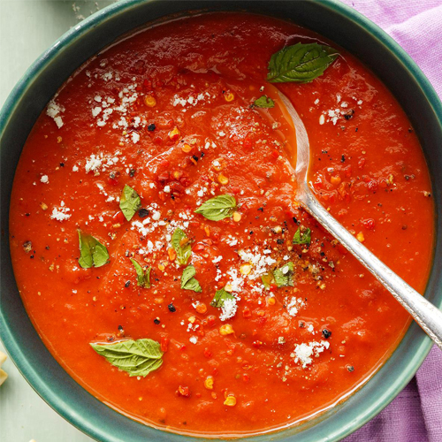

Tomato Soup

Ingredients
- 1 tablespoon vegetable oil
- 1 cup chopped onion
- 2 cloves garlic, minced
- ½ cup chopped carrot
- ¼ cup chopped celery
- 2 (28 ounce) cans crushed tomatoes
- 3½ cups vegetable broth
- 1 tablespoon vegetarian Worcestershire sauce
- 1 teaspoon salt
- ½ teaspoon dried thyme
- ½ teaspoon ground black pepper
- 4 drops hot pepper sauce
How to make?
- Heat oil in a large Dutch oven over medium-high heat. Saute onion and garlic until onion is tender.
- Add carrot and celery; cook 7 to 9 minutes until tender, stirring frequently. Stir in tomatoes, broth, Worcestershire sauce, salt, thyme, pepper and hot pepper sauce. Reduce heat to low. Cover and simmer 20 minutes, stirring frequently.
Return to main page